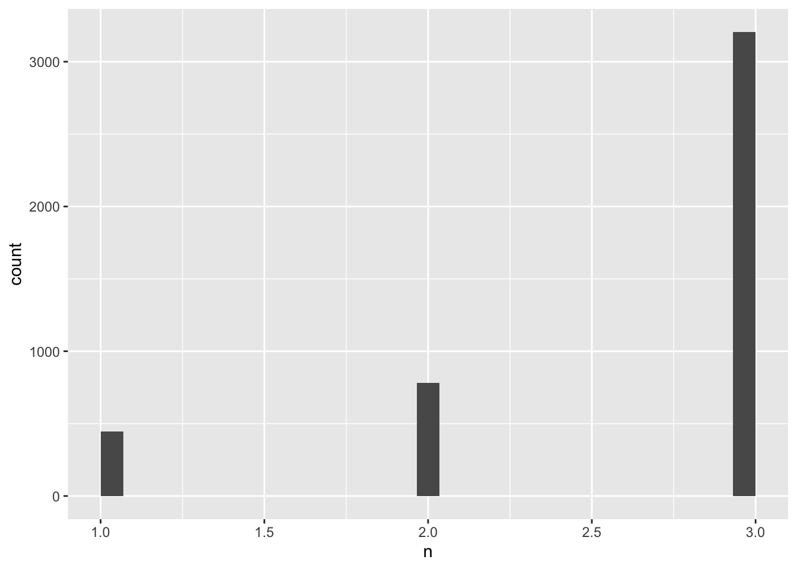
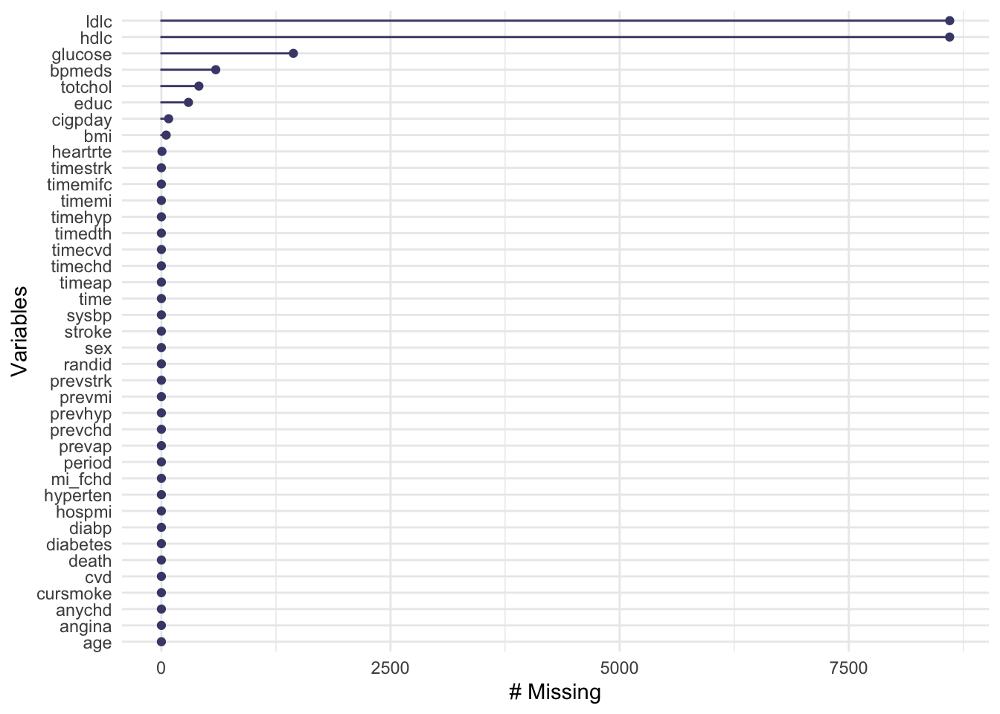
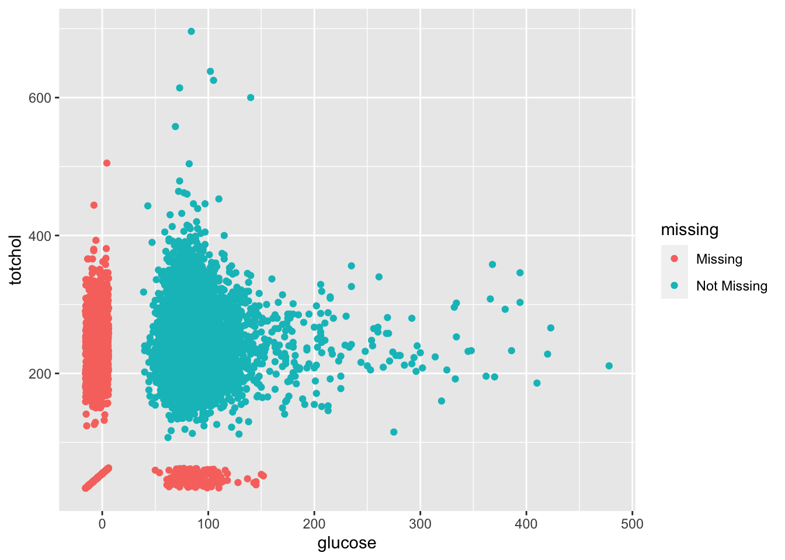
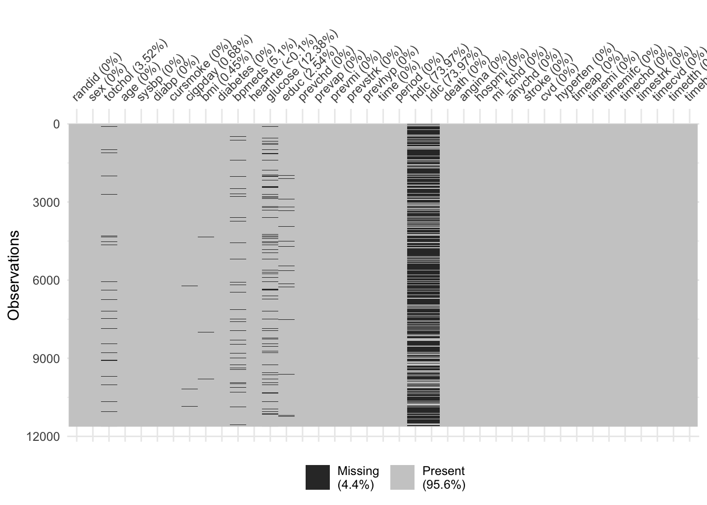

Chapter 7 Longitudinal cohort study designs
The readings for this chapter are
The following are a series of instructional papers on survival analysis, that are meant as general background on how to fit survival analysis models.
7.1 Longitudinal cohort data
Example datasets are available online, but also made available to you on the course
website. For the Framingham Heart Study the example data are available as the file
“frmgham2.csv”. It is saved in a csv format, and so they can be read into R using the
read_csv function from the readr package (part of the tidyverse). You can use the following code to read in these data, assuming you have saved them in a “data” subdirectory of your current
working directory:
library(tidyverse) # Loads all the tidyverse packages, including readr
fhs <- read_csv("data/frmgham2.csv")
fhs## # A tibble: 11,627 x 39
## RANDID SEX TOTCHOL AGE SYSBP DIABP CURSMOKE CIGPDAY BMI DIABETES BPMEDS
## <dbl> <dbl> <dbl> <dbl> <dbl> <dbl> <dbl> <dbl> <dbl> <dbl> <dbl>
## 1 2448 1 195 39 106 70 0 0 27.0 0 0
## 2 2448 1 209 52 121 66 0 0 NA 0 0
## 3 6238 2 250 46 121 81 0 0 28.7 0 0
## 4 6238 2 260 52 105 69.5 0 0 29.4 0 0
## 5 6238 2 237 58 108 66 0 0 28.5 0 0
## 6 9428 1 245 48 128. 80 1 20 25.3 0 0
## 7 9428 1 283 54 141 89 1 30 25.3 0 0
## 8 10552 2 225 61 150 95 1 30 28.6 0 0
## 9 10552 2 232 67 183 109 1 20 30.2 0 0
## 10 11252 2 285 46 130 84 1 23 23.1 0 0
## # … with 11,617 more rows, and 28 more variables: HEARTRTE <dbl>,
## # GLUCOSE <dbl>, educ <dbl>, PREVCHD <dbl>, PREVAP <dbl>, PREVMI <dbl>,
## # PREVSTRK <dbl>, PREVHYP <dbl>, TIME <dbl>, PERIOD <dbl>, HDLC <dbl>,
## # LDLC <dbl>, DEATH <dbl>, ANGINA <dbl>, HOSPMI <dbl>, MI_FCHD <dbl>,
## # ANYCHD <dbl>, STROKE <dbl>, CVD <dbl>, HYPERTEN <dbl>, TIMEAP <dbl>,
## # TIMEMI <dbl>, TIMEMIFC <dbl>, TIMECHD <dbl>, TIMESTRK <dbl>, TIMECVD <dbl>,
## # TIMEDTH <dbl>, TIMEHYP <dbl>- One important difference compared to a time-series dataset is the
RANDIDvariable. This is the unique identifier for unit for which we have repeated observations for over time. In this case theRANDIDvariable represents a unique identifier for each study participant, with multiple observations (rows) per participant over time. - The
TIMEvariable indicates the number of days that have ellapsed since beginning of follow-up of each observation. (TIME=0for the first observation of each participant). - Number of observations varies between participants (typical)
- The time spacing between observations is not constant. This is because the repeated observations in the Framingham Heart Study are the result of follow-up exams happening 3 to 5 years apart. Many longitudinal cohorts will instead have observations over a fixed time interval (monthly, annual, biannual etc), resulting in a more balanced dataset.
- Observations are given for various risk factors, covariates and cardiovascular outcomes. Some will be invariant for each participant over time (
SEX,educ), while others will vary with each exam.
From a data management perspective, we might want to change all the column names
to be in lowercase, rather than uppercase. This will save our pinkies some
work as we code with the data! You can make that change with the following
code, using the str_to_lower function from the stringr package (part of
the tidyverse):
## # A tibble: 11,627 x 39
## randid sex totchol age sysbp diabp cursmoke cigpday bmi diabetes bpmeds
## <dbl> <dbl> <dbl> <dbl> <dbl> <dbl> <dbl> <dbl> <dbl> <dbl> <dbl>
## 1 2448 1 195 39 106 70 0 0 27.0 0 0
## 2 2448 1 209 52 121 66 0 0 NA 0 0
## 3 6238 2 250 46 121 81 0 0 28.7 0 0
## 4 6238 2 260 52 105 69.5 0 0 29.4 0 0
## 5 6238 2 237 58 108 66 0 0 28.5 0 0
## 6 9428 1 245 48 128. 80 1 20 25.3 0 0
## 7 9428 1 283 54 141 89 1 30 25.3 0 0
## 8 10552 2 225 61 150 95 1 30 28.6 0 0
## 9 10552 2 232 67 183 109 1 20 30.2 0 0
## 10 11252 2 285 46 130 84 1 23 23.1 0 0
## # … with 11,617 more rows, and 28 more variables: heartrte <dbl>,
## # glucose <dbl>, educ <dbl>, prevchd <dbl>, prevap <dbl>, prevmi <dbl>,
## # prevstrk <dbl>, prevhyp <dbl>, time <dbl>, period <dbl>, hdlc <dbl>,
## # ldlc <dbl>, death <dbl>, angina <dbl>, hospmi <dbl>, mi_fchd <dbl>,
## # anychd <dbl>, stroke <dbl>, cvd <dbl>, hyperten <dbl>, timeap <dbl>,
## # timemi <dbl>, timemifc <dbl>, timechd <dbl>, timestrk <dbl>, timecvd <dbl>,
## # timedth <dbl>, timehyp <dbl>Applied exercise: Exploring longitudinal cohort data Read the example cohort data in R and explore it to answer the following questions:
- What is the number of participants and number of observations in the
fhsdataset? - Is there any missingness in the data?
- How many participants die? What is the distribution of age at time of death?
- What is the distribution of age at time of incident MI? Are there differences between males and females? Are there differences in smoking between males and females?
- What is the distribution of BMI among MI cases and non-cases? How about between smokers and non-smokers
Based on this exploratory exercise in this section, talk about the potential for confounding when these data are analyzed to estimate the association between smoking and risk of incident MI.
Applied exercise: Example code
- What is the number of participants and the number of observations in the
fhsdataset? (i.e what is the sample size and number of person-time observations)
In the fhs dataset, the number of participants will be equal to the number of unique ID’s (The RANDID variable which takes a unique value for each participant). We can extract this using the unique function nested within the length function
## [1] 4434If you’d like to use tidyverse tools to answer this question, you can do
that, as well. The pipe operator (%>%) works on any type of object—it will
take your current output and include it as the first parameter value for the
function call you pipe into. If you want to perform operations on a column of
a dataframe, you can use pull to extract it from the dataframe as a vector, and
then pipe that into vector operations:
## [1] 4434It’s entirely a personal choice whether you use the $ operator and “nesting”
of function calls, versus pull and piping to do a series of function calls.
You can see you get the same result, so it just comes down to the style that
you will find easiest to understand when you look at your code later.
The number of person-time observations will actually be equal to the length of the dataset.
The dim function gives us the length (number of rows) and width (number of columns) for a dataframe or any matrix like object in R.
## [1] 11627 39We see that there is approximately an average of 2 to 3 observations per participants.
When you know there are repeated measurements, it can be helpful to explore how much variation there is in the number of observations per study subject. You could do that in this dataset with the following code:
fhs %>%
# Group by the study subject identifier and then count the rows for each
group_by(randid) %>%
count() %>%
# Reorder the dataset so the subjects with the most observations come first
arrange(desc(n)) %>%
head()## # A tibble: 6 x 2
## # Groups: randid [6]
## randid n
## <dbl> <int>
## 1 6238 3
## 2 11252 3
## 3 11263 3
## 4 12806 3
## 5 14367 3
## 6 16365 3You can visualize this, as well. A histogram is one good choice:
fhs %>%
# Group by the study subject identifier and then count the rows for each
group_by(randid) %>%
count() %>%
ggplot(aes(x = n)) +
geom_histogram() All study subjects have between one and three measurements. Most of the study subjects (over 3,000) have three measurements recorded in the dataset.
- Is there any missingness in the data?
We can check for missingness in a number of ways. There are a couple of great
packages, visdat and naniar, that include functions for investigating
missingness in a dataset. If you don’t have these installed, you can install
them using install.packages("naniar") and install.packages("visdat"). The
naniar package has a vignette with
examples
that is a nice starting point for working with both packages.
The vis_miss function shows missingness in a dataset in a way that lets you
get a top-level snapshot:
## Warning: package 'visdat' was built under R version 4.0.2 Another was to visualize this is with
Another was to visualize this is with gg_miss_var:
## Warning: package 'naniar' was built under R version 4.0.2
Many of the variables are available for all observations, with no missingness,
including records of the subject’s ID, measures of death, stroke, CVD, and other
events, age, sex, and BMI. Some of the measured values from visits are missing
occasionally, like the total cholesterol, and glucose. Other measures asked of
the participants (number of cigarettes per day, education) are occasionally
missing. Two of the variables—hdlc and ldlc—are missing more often than
they are available.
You can also do faceting with the gg_miss_var function. For
example, you could see if missingness varies by the period of the observation:

You may also want to check if missingness varies with whether an observation was associated with death of the study subject:

There are also functions in these packages that allow you to look at how
missingness is related across variables. For example, both glucose and
totchol are continuous variables, and both are occasionally missing. You
can use the geom function geom_miss_point from the nanair package
with a ggplot object to explore patterns of missingness among these two
variables:

The lower left corner shows the observations where both values are missing—it
looks like there aren’t too many. For observations with one missing but not the
other (the points in red along the x- and y-axes), it looks like the distribution
across the non-missing variable is pretty similar to that for observations
with both measurements avaiable. In other words, totchol has a similar
distribution among observations where glucose is available as observations
where glucose is missing.
You can also do things like facet by sex to explore patterns at a finer level:

- How many participants die? What is the distribution of age at time of death?
The DEATH variable in the fhs data is an indicator for mortality if a participant died at any point during follow-up. It is time-invariant taking the value 1 if a participant died at any point or 0 if they were alive at their end of follow-up, so we have to be careful on how to extract the actual number of deaths.
It is often useful to extract the first (and sometimes last) observation, in order to assess certain covariate statistics on the individual level. We can create a dataset including only the first (or last) observation per participant from the fhs data using tidyverse tools as following:
In this dataset we can extract statistics on baseline covariates on the individual level, but also assess the number of participants with specific values, including death=1. For example, we can use the sum function in base R, which generates the sum of all values for a given vector. In this case since each death has the value of 1 the sum function will give as the number of deaths in the sample.
## [1] 1550Conversely using tidyverse tools
Survival or time-to-event outcomes in longitudinal cohort data will often be time-varying. For example, a variable for mortality will take the value of zero until the person-time observation that represents the time interval that the outcome actually happens in. For outcomes such as mortality this will typically be the last observation. We will construct a variable like this in fhs below.
What is the distribution of age at time of incident MI? Are there differences between males and females? Are there differences in smoking between males and females?
What is the distribution of BMI among MI cases and non-cases? How about between smokers and non-smokers
7.2 Coding a survival analysis
In the context of survival analysis what is modelled is time to an event. This is
a bit different than the models in the glm family that model an outcome that follows
a particular distribution. The survival package in R allows us to fit these types of models, including a very popular model in survival analysis, the Cox proportional
hazards model that was also applied in Wong et al. (1989).
The Cox proportional hazards model in a simple form has this form
\(log(\lambda(t|X))=log(\lambda_{0}(t))+\beta_{1}\times X\)
where \(\lambda(t)\) represent the hazard at time \(t\), \(\lambda_{0}(t)\) is the baseline hazard at time \(t\), and \(\beta_{1}\) is the log hazard for those with \(X=1\) compared to \(X=0\). The baseline hazard \(\lambda_{0}(t)\) is similar to the intercept term in a linear model or glm and is the value of the hazard when all covariates equal 0. However, unlike the intercept term in a linear model or glm, \(\lambda_{0}(t)\) is not estimated by the model. The above model can also be writen as
\(\lambda(t|X)=\lambda_{0}(t)\times e^{\beta_{1}\times X}\)
\(e^{\beta_{1}\) is the hazard ratio comparing those hose with \(X=1\) and \(X=0\)
Using the fhs data we will fit a simple Cox proportianal hazard for the effect of smoking on the hazard for MI.
7.3 Handling complexity
7.3.1 Multi-level exposure
7.3.2 Recurrent outcome
7.3.3 Time-varying coeffificents
7.3.4 Using survey results
[e.g., NHANES]
References
Andersson, Charlotte, Andrew D Johnson, Emelia J Benjamin, Daniel Levy, and Ramachandran S Vasan. 2019. “70-Year Legacy of the Framingham Heart Study.” Nature Reviews Cardiology, 1.
Bradburn, Michael J, Taane G Clark, Sharon B Love, and Douglas G Altman. 2003a. “Survival Analysis Part Iii: Multivariate Data Analysis–Choosing a Model and Assessing Its Adequacy and Fit.” British Journal of Cancer 89 (4): 605–11.
Bradburn, Michael J, Taane G Clark, Sharon B Love, and Douglas G Altman. 2003b. “Survival Analysis Part Ii: Multivariate Data Analysis–an Introduction to Concepts and Methods.” British Journal of Cancer 89 (3): 431–36.
Clark, Taane G, Michael J Bradburn, Sharon B Love, and Douglas G Altman. 2003. “Survival Analysis Part I: Basic Concepts and First Analyses.” British Journal of Cancer 89 (2): 232–38.
Wong, Nathan D, Adrienne Cupples, Adrian M Ostfeld, Daniel Levy, and William B Kannel. 1989. “Risk Factors for Long-Term Coronary Prognosis After Initial Myocardial Infarction: The Framingham Study.” American Journal of Epidemiology 130 (3): 469–80.